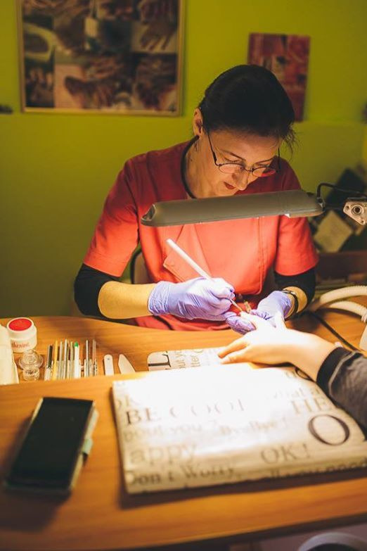

O nama
Prve "umjetne" nokte napravila sam sa nekih 10 godina, od papira i zalijepila selotejpom. Bili su crveni naravno. A s 19 sam naučila modelirati prave "umjetne" nokte. Da... od tada je sve počelo.
Imala sam sreću upoznati divne ljude, majstore koji su mi nesebično prenijeli svoja znanja o njezi noktiju i tehnike rada.
Na samom početku mog rada, 1988., za nadogradnju noktiju koristile su se tipse, a za modeliranje akril. Iako sam koristila tada najkvalitetniji OPI-jev materijal, proces rada bio je dug, budući je akril jako čvrst materijal. Do pravilno i lijepo oblikovanih noktiju trebalo je raditi i tri sata.
S vremenom su se razvili novi materijali i alati. Prije nekih 25 godina prepoznala sam kvalitetu njemačke kuće Cathrine. Imala sam sreću učiti njihovu tehniku osobno od osnivačice gđe. Ingeborg Frimmel. Njezina filozofija i pristup njezi noktiju čini me zadovoljnim korisnikom njihovih materijala i predivne palete boja gelova i danas. Njihova kvaliteta i inovativnost su uvijek na najvišoj razini.
Iznimno sam sretna što sam svoje znanje o njezi i njezi prirodnih noktiju naučila od gđa. Jessica Vartouhian, osnivačica Jessica Cosmetics. Žene koja je poznata kao prva dama noktiju.
Moje najveće zadovoljstvo je vidjeti sretnu i zadovoljnu klijenticu.
Posebno je zadovoljstvo vidjeti sretnu klijenticu, čiji su jednom grickani nokti, sada pravilni, lijepi i zdravi nokti. Za svaki problem na noktima postoji rješenje.
Tako je počeo put moje suradnice, već 17 godina, Marijane Renje. Od zadovoljne klijentice do izuzetno stručne i vrijedne majstorice u oblikovanju noktiju.
Ime, , došlo je iz Riječnika šepurinskog govora, u kojem stoji da je to izraz za njegovanu ženu. Upravo je to moj cilj, da njegujete svoje ruke i nokte i osjećate se kao prinčeža!
Upravo je to moj cilj, da njegujete svoje ruke i nokte i osjećate se kao prinčeže!
Tim PRINČEŽE 1 je kroz 30 godina iskustva došao do prepoznatljivosti rada, osiguravajući kvalitetu i profesionalnost. Posvećeni smo zdravlju vaših noktiju i lijepom izgledu vaših ruku i stopala.
- Dijana Bezbradica